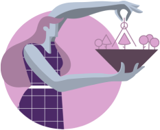
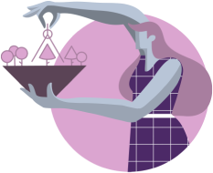

Enneagram In Relationships
On one hand, Enneagram type 1s (Reformers) are dedicated, perfectionist, hard-working people. Taking care of responsibilities and keeping up with schedules will tend to come first, while pleasure, partying, vacation and leisure will definitely come second.
In private or personal relationships with each other and also with family and friends, both will seek to be objective, reasonable, fair, and truthful above everything else. They will be able to create a clear and precise atmosphere in which their own interactions with each connection they establish will feel clean (not sticky or loaded with unspoken ulterior motives).
This type of pairing is often created and maintained by shared ideals and solid convictions which they enforce with tolerance and passion. Fairness, truthfulness, consistency, respect, and dignity are some of the best characteristics that this type of Enneagram relationship has. They both have a strong will to put these ideals into practice which makes them respect and admire each other.
Enneagram Type 1 In A Relationship With Type 6
How Does Each Enneagram Type Enhance the Relationship?
In private or personal relationships with each other and also with family and friends, both will seek to be objective, reasonable, fair, and truthful above everything else. They will be able to create a clear and precise atmosphere in which their own interactions with each connection they establish will feel clean (not sticky or loaded with unspoken ulterior motives).
This type of pairing is often created and maintained by shared ideals and solid convictions which they enforce with tolerance and passion. Fairness, truthfulness, consistency, respect, and dignity are some of the best characteristics that this type of Enneagram relationship has. They both have a strong will to put these ideals into practice which makes them respect and admire each other.


22
Enneagram 1 in Relationships